Fogo
Pokémon de fogo são criaturas conhecidas por ataques baseados em calor e chamas, geralmente associados a grande poder ofensivo. Eles têm vantagem contra Pokémon do tipo Grama, Inseto, Gelo e Aço, mas são vulneráveis a Água, Rocha e Terra. Muitas vezes possuem designs inspirados em animais velozes ou símbolos de energia, como leões, lagartos e aves. Exemplos famosos incluem Charmander, Charizard, Vulpix, Arcanine, Cyndaquil, Torchic, Infernape e Fuecoco. Além de ataques como Flamethrower e Fire Blast, muitos evoluem para formas ainda mais poderosas, tornando-se destaque em batalhas.
VER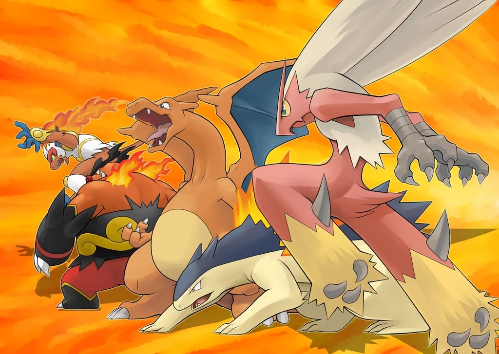

Planta
Pokémon do tipo Planta são conhecidos por suas habilidades ligadas à natureza, como controlar plantas, flores e esporos. Eles têm vantagem contra tipos Água, Rocha e Terra, mas são vulneráveis a Fogo, Gelo, Voador, Inseto e Veneno. Costumam ter aparência inspirada em árvores, flores, frutos ou criaturas da floresta. Entre os mais famosos estão Bulbasaur, Venusaur, Chikorita, Sceptile, Roserade e Rillaboom. Seus ataques incluem golpes como Razor Leaf, Solar Beam e Leech Seed, que combinam dano com efeitos estratégicos como recuperação de energia ou enfraquecimento do oponente.
VERElétrico
Pokémon do tipo Elétrico são mestres da eletricidade e dos raios, conhecidos por sua velocidade e capacidade de paralisar adversários. Eles têm vantagem contra o tipo Água e Voador, mas são pouco eficazes contra o tipo Terra, que é sua maior fraqueza. Geralmente inspirados em animais ágeis, como roedores, felinos e aves, são símbolos de energia e dinamismo. Entre os mais famosos estão Pikachu, Raichu, Jolteon, Ampharos, Luxray e Zeraora. Seus ataques incluem técnicas como Thunderbolt, Volt Tackle e Thunder Wave, capazes de causar grande dano ou reduzir a mobilidade do inimigo.
VER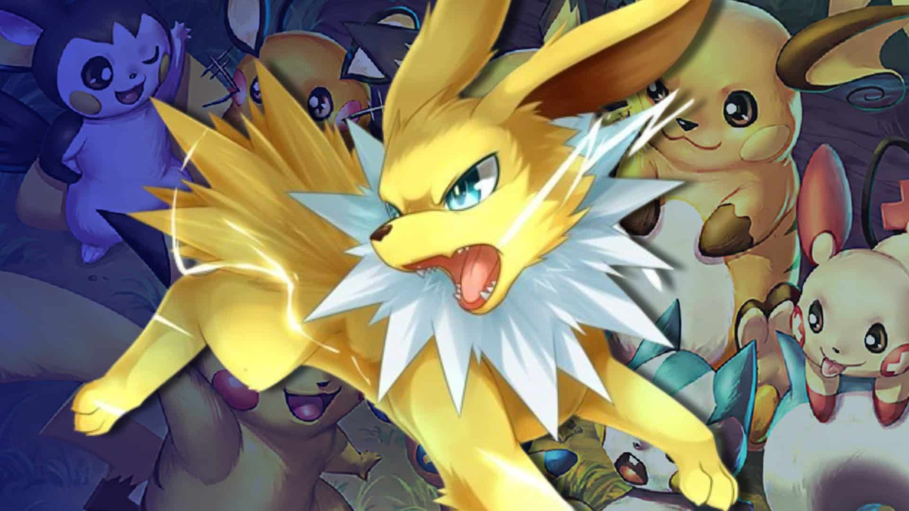
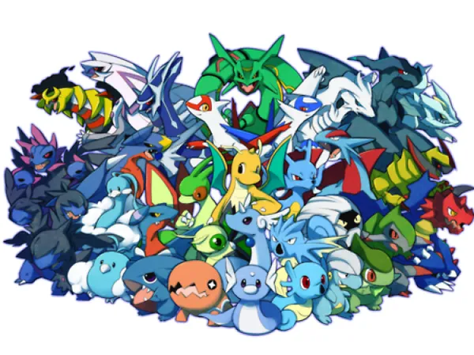
Dragão
Pokémon do tipo Dragão são conhecidos por sua força impressionante e resistência, sendo considerados entre os mais poderosos do universo Pokémon. Inspirados em criaturas lendárias e mitológicas, eles costumam ter aparência majestosa e habilidades versáteis. Possuem vantagem contra outros tipos Dragão e, em algumas gerações, contra Pokémon específicos dependendo das combinações de tipos, mas são vulneráveis a Gelo, Fada e Dragão. Entre os mais icônicos estão Dragonite, Salamence, Garchomp, Rayquaza, Haxorus e Dragapult. Seus ataques, como Dragon Claw, Draco Meteor e Outrage, podem causar danos massivos, tornando-os temidos em batalhas competitivas.
VERFantasma
Pokémon do tipo Fantasma são criaturas misteriosas e etéreas, associadas ao sobrenatural, espíritos e fenômenos paranormais. Eles têm vantagem sobre os tipos Psíquico e Fantasma, e são imunes a ataques do tipo Normal e Lutador, mas vulneráveis a ataques do tipo Fantasma e Sombrio. Costumam ter aparências assustadoras ou enigmáticas, como fantasmas, espectros e entidades sombrias. Exemplos famosos incluem Gengar, Gastly, Mismagius, Chandelure e Dragapult. Seus ataques, como Shadow Ball e Hex, combinam dano com efeitos especiais, sendo bastante estratégicos em batalhas.
VER
Água
Pokémon do tipo Água são versáteis e equilibrados, inspirados em criaturas aquáticas como peixes, tartarugas, golfinhos e até monstros marinhos. Têm vantagem contra os tipos Fogo, Rocha e Terra, mas são vulneráveis a Elétrico e Planta. São comuns em várias regiões e ideais para treinadores iniciantes devido à sua ampla variedade de ataques e combinações de tipos. Entre os mais conhecidos estão Squirtle, Blastoise, Gyarados, Lapras, Milotic e Greninja. Seus golpes, como Surf, Hydro Pump e Waterfall, podem causar alto dano e, muitas vezes, também auxiliar na exploração fora das batalhas.
VER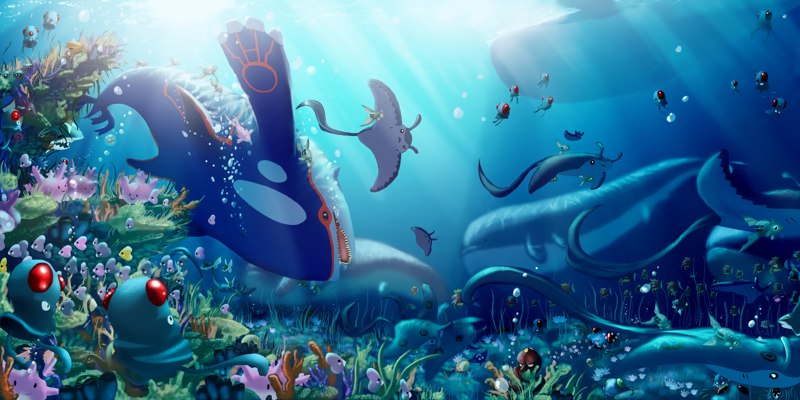
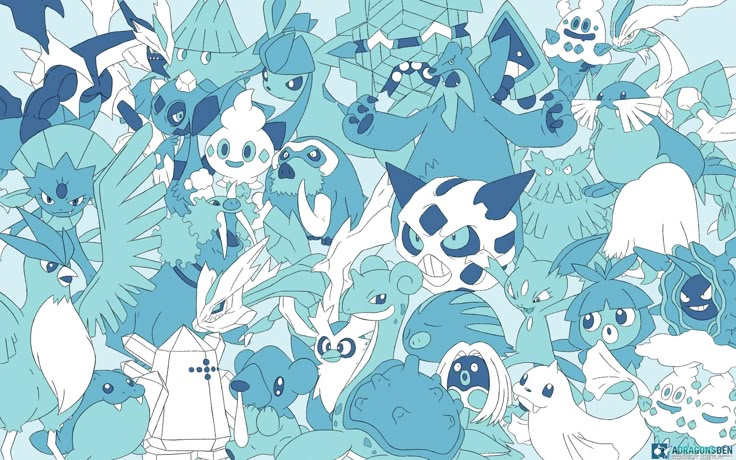
Gelo
Pokémon do tipo Gelo são mestres de ataques gelados, capazes de congelar o campo de batalha e reduzir a velocidade dos inimigos. Eles têm vantagem contra os tipos Dragão, Voador, Planta e Terra, mas são vulneráveis a Fogo, Lutador, Pedra e Aço. Inspirados em animais do Ártico, criaturas mitológicas e formações de gelo, costumam ter aparência elegante e perigosa ao mesmo tempo. Entre os mais conhecidos estão Articuno, Lapras, Glaceon, Froslass, Weavile e Aurorus. Seus ataques, como Ice Beam, Blizzard e Freeze-Dry, podem causar grande dano e, muitas vezes, deixar o adversário congelado, tornando-os ameaçadores em batalhas.
Rocha
Pokémon do tipo Rocha são resistentes e poderosos, inspirados em minerais, pedras e fósseis pré-históricos. Eles têm vantagem contra os tipos Fogo, Gelo, Voador e Inseto, mas são vulneráveis a Água, Planta, Aço, Lutador e Terra. Costumam ter alta defesa física, embora possam ser mais lentos que outros tipos. Muitos são baseados em criaturas fossilizadas ou formações rochosas vivas. Entre os mais conhecidos estão Onix, Golem, Tyranitar, Rampardos, Gigalith e Rhyperior. Seus golpes, como Stone Edge, Rock Slide e Ancient Power, causam grande dano físico e podem até atingir inimigos no ar.
VER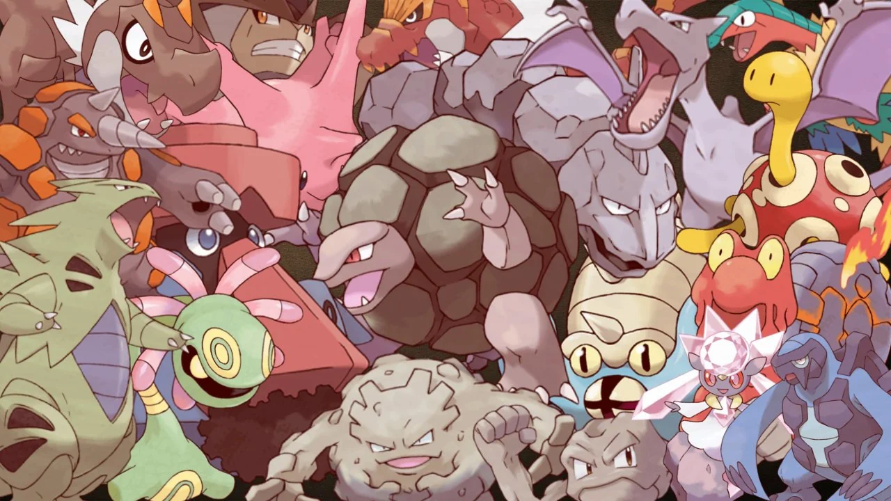
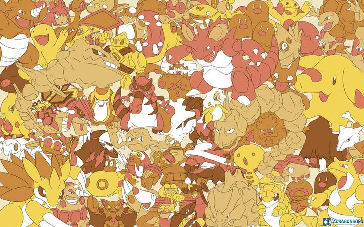
Terra
Pokémon do tipo Terra são especialistas em manipular o solo, areia e lama, sendo ideais contra tipos Elétrico, Fogo, Pedra, Veneno e Aço. Eles são imunes a ataques Elétricos, mas têm fraqueza contra Água, Gelo e Planta. Geralmente inspirados em animais que vivem no subsolo, répteis ou criaturas gigantes, costumam ter grande força física e resistência. Entre os mais conhecidos estão Sandshrew, Groudon, Garchomp, Excadrill, Mudsdale e Donphan. Seus golpes, como Earthquake, Earth Power e Bulldoze, podem causar alto dano e até afetar vários oponentes de uma vez.
VERLutador
Pokémon do tipo Lutador são mestres em combate físico, focando em força, velocidade e técnicas corporais. Eles têm vantagem contra tipos Normal, Gelo, Pedra, Aço e Sombrio, mas são vulneráveis a Voador, Psíquico e Fada. Costumam ter aparência inspirada em atletas, artistas marciais ou criaturas musculosas, transmitindo disciplina e poder. Entre os mais conhecidos estão Machamp, Lucario, Blaziken, Infernape, Hawlucha e Conkeldurr. Seus golpes, como Close Combat, Dynamic Punch e Aura Sphere, são capazes de causar grande dano físico e virar o rumo de uma batalha rapidamente.
VER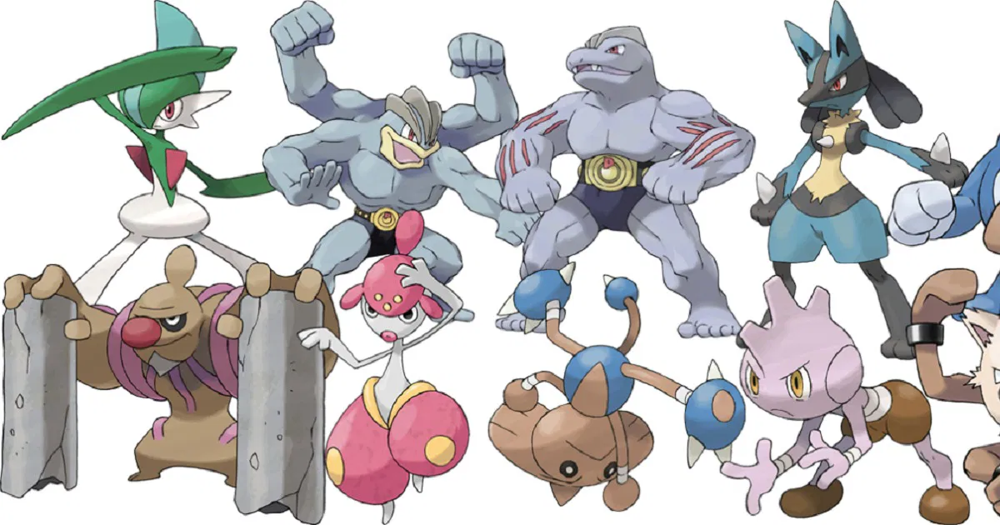
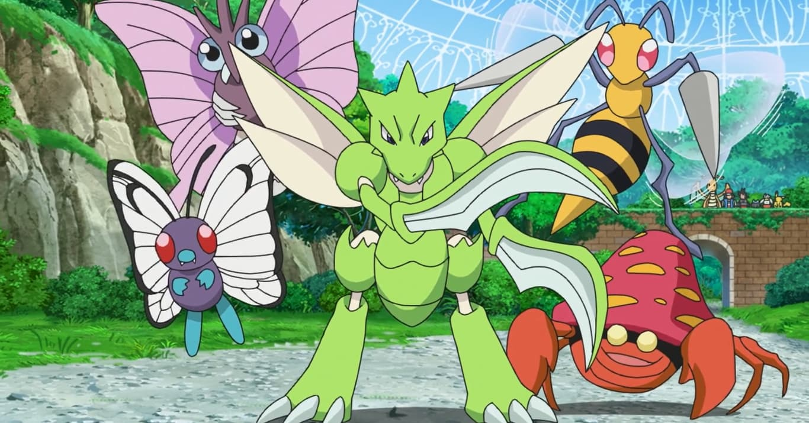
Inseto
Pokémon do tipo Inseto são inspirados em insetos e artrópodes, geralmente ágeis e adaptáveis, mas com defesas mais baixas. Eles têm vantagem contra tipos Planta, Sombrio e Psíquico, porém são vulneráveis a Fogo, Voador e Rocha. Muitas vezes evoluem rapidamente e possuem formas múltiplas, representando a metamorfose dos insetos reais. Entre os mais conhecidos estão Butterfree, Scizor, Heracross, Volcarona, Beedrill e Vikavolt. Seus ataques, como Bug Buzz, X-Scissor e U-turn, combinam dano com utilidade estratégica, sendo eficazes para pressionar o adversário e mudar o ritmo da batalha.
VER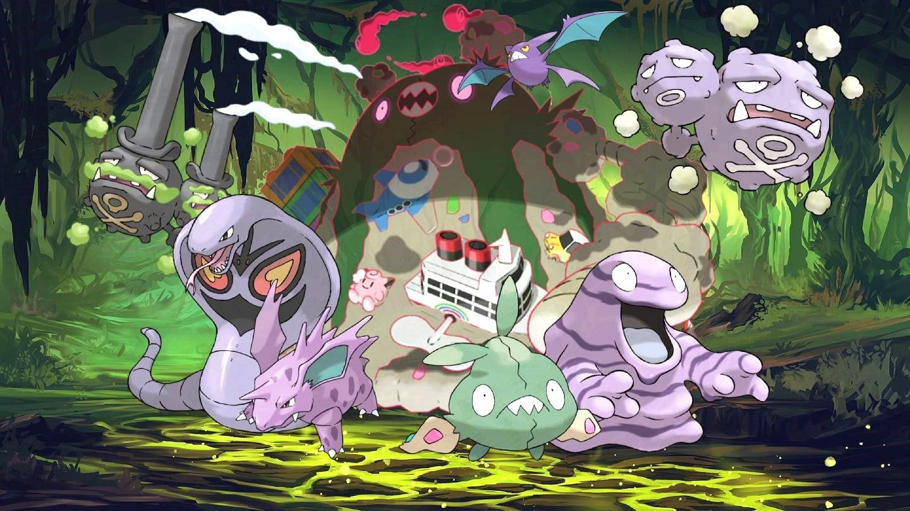
Veneno
Pokémon do tipo Veneno são especialistas em toxinas e substâncias químicas, capazes de envenenar e enfraquecer os adversários ao longo da batalha. Eles têm vantagem contra tipos Planta e Fada, mas são vulneráveis a Psíquico e Terra. Muitas vezes são inspirados em animais venenosos, como cobras, aranhas e insetos, ou em plantas tóxicas. Entre os mais conhecidos estão Zubat, Nidoking, Venomoth, Gengar (veneno/fantasma) e Toxicroak. Seus ataques, como Poison Jab, Sludge Bomb e Toxic, podem causar dano contínuo ou efeitos debilitantes, tornando-os estratégicos e difíceis de combater.
VERPsíquico
Pokémon do tipo Psíquico são conhecidos por suas habilidades mentais e poderes sobrenaturais, como telepatia, telecinesia e manipulação da mente. Eles têm vantagem contra os tipos Lutador e Veneno, mas são vulneráveis a Sombrio e, em algumas gerações, a Fantasma. Frequentemente têm aparência mística ou enigmática, transmitindo inteligência e poder psíquico. Entre os mais conhecidos estão Alakazam, Mewtwo, Espeon, Metagross e Gardevoir. Seus ataques, como Psychic, Psybeam e Future Sight, combinam dano elevado com efeitos estratégicos, sendo altamente eficazes em batalhas táticas.
VER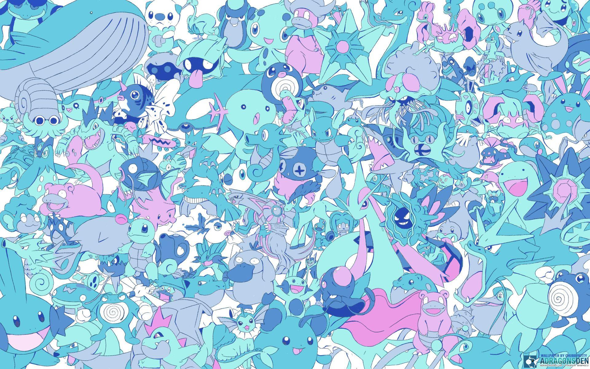
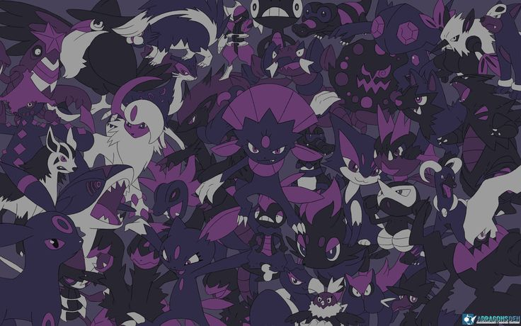
Sombrio
Pokémon do tipo Sombrio são astutos e traiçoeiros, usando ataques baseados em engano, medo e manipulação das emoções do oponente. Eles têm vantagem contra tipos Psíquico e Fantasma, mas são vulneráveis a Lutador, Fada e Inseto. Frequentemente apresentam aparência ameaçadora ou misteriosa, transmitindo perigo e estratégia. Entre os mais conhecidos estão Umbreon, Darkrai, Tyranitar (sombrio/pedra), Hydreigon e Toxicroak. Seus golpes, como Dark Pulse, Night Slash e Foul Play, combinam dano com efeitos que confundem ou prejudicam o adversário, tornando-os difíceis de enfrentar.
VERAço
Pokémon do tipo Aço são extremamente resistentes e duráveis, com alta defesa física e resistência a diversos tipos de ataque. Eles têm vantagem contra tipos Gelo, Pedra e Fada, mas são vulneráveis a Fogo, Lutador e Terra. Frequentemente inspirados em metais, máquinas ou armaduras, possuem aparência robusta e imponente. Entre os mais conhecidos estão Steelix, Scizor, Metagross, Magnezone e Lucario (aço/lutador). Seus ataques, como Iron Tail, Flash Cannon e Meteor Mash, combinam força e precisão, tornando-os aliados confiáveis em batalhas defensivas e ofensivas.
VER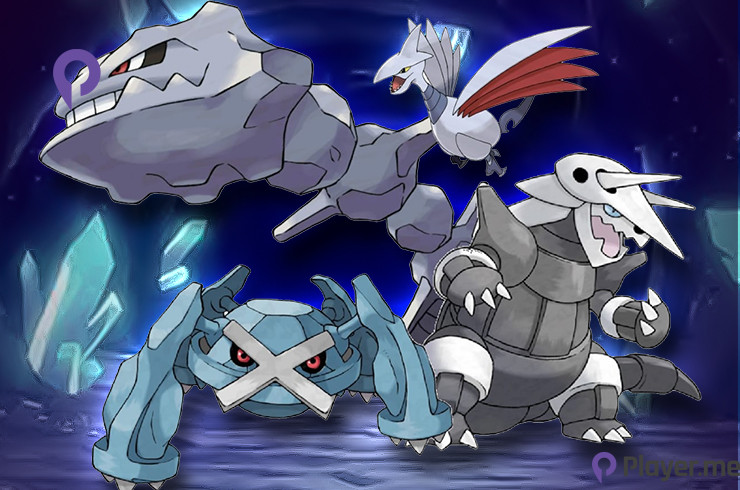
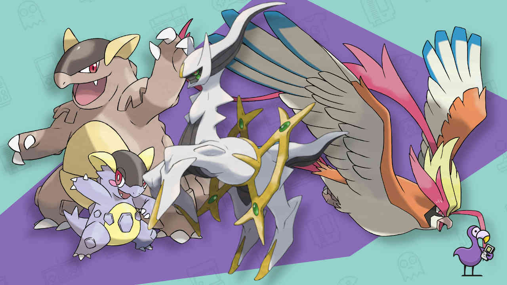
Normal
Pokémon do tipo Normal são os mais comuns e versáteis, geralmente sem fraquezas diretas, exceto contra Lutador, e sem vantagens específicas sobre outros tipos. Eles apresentam grande variedade de formas, inspiradas em animais, humanos ou objetos, e muitas vezes possuem combinações com outros tipos para aumentar sua eficácia. Entre os mais conhecidos estão Snorlax, Pidgey, Eevee, Zangoose e Tauros. Seus ataques, como Hyper Beam, Body Slam e Return, oferecem dano consistente e podem ser usados de forma estratégica, especialmente quando combinados com habilidades ou movimentos de outros tipos.
VERFada
Pokémon do tipo Fada são graciosos e encantadores, muitas vezes associados à magia e ao sobrenatural. Eles têm vantagem contra tipos Lutador, Dragão e Sombrio, mas são vulneráveis a Aço e Veneno. Costumam ter aparência delicada, inspirada em fadas, criaturas místicas ou elementos mágicos. Entre os mais conhecidos estão Sylveon, Gardevoir, Togekiss, Mimikyu e Alcremie. Seus ataques, como Moonblast, Dazzling Gleam e Play Rough, combinam dano e efeitos especiais, sendo estratégicos tanto ofensivamente quanto defensivamente em batalhas.
VER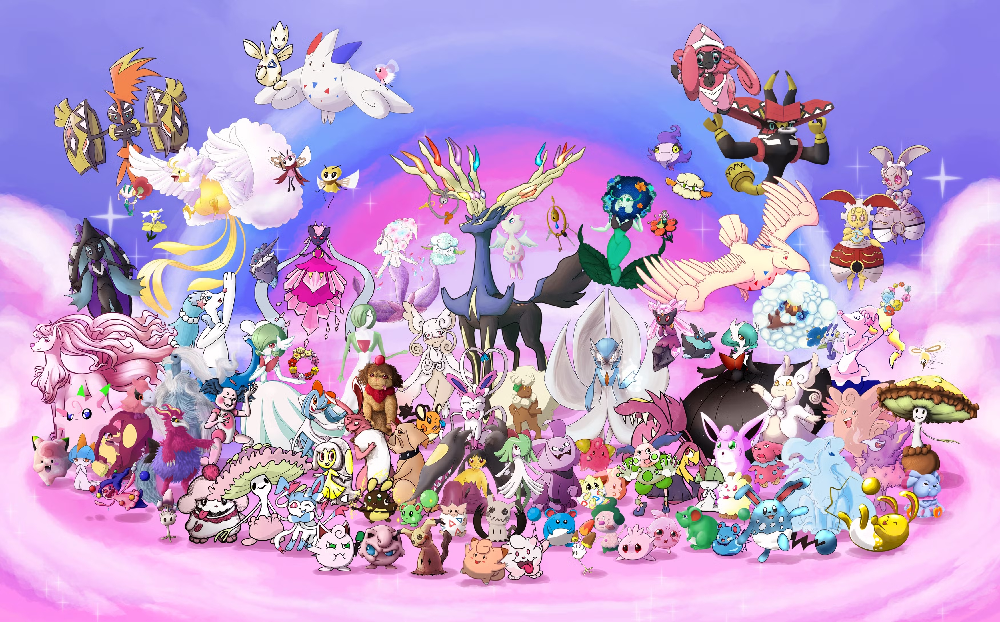